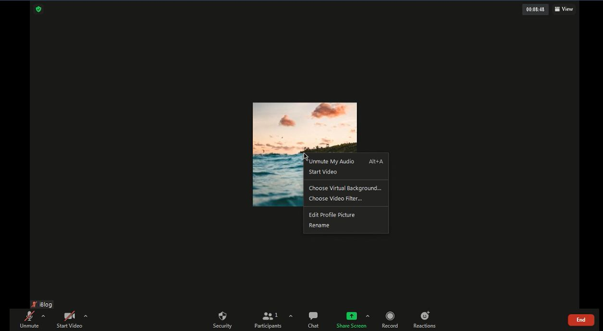

How to change virtual background in zoom in pc
 |
 |
July 2, 2021 |
Zoom is very popular video conferencing app. Nowdays it used very much in online teaching. If you want to change virtual background in zoom then you are reading correct blog
Note: This will only work in PC
To change virtual background in Zoom follow these steps:
-
Open zoom app
-
Now right click your profile photo and select "Choose virtual background"
 -
Now as u can see in the gif select background you want
-
Now if you have to add your custom background then click the "+" icon and click "Add image".Then select the image you want
-
Click the small color picker in the bottom center and select a solid colour that is your background.In my case it is light green and I have selected it.